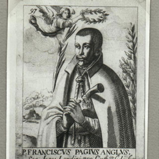

Isusovački blaženici
Svećenik · Mučenik
Bl. Franjo Page
? – 1602.
Obraćenje ga je od pravničkoga poziva povelo prema svećeništvu. U londonskom zatvoru položio je isusovačke zavjete neposredno prije pogubljenja zbog katoličke službe.
Tekst je preveden i prilagođen uz pomoć umjetne inteligencije.

Izvor slike
- Spomendan
- 20. travnja
- Zaštitništvo
- Nije navedeno u izvoru
- Životni vijek
- ? – 1602.
- Mjesto rođenja
- Antwerpen
- Svećeničko ređenje
- 1600.
- Datum smrti
- 20. travnja 1602.
U kalendaru zbirke koristi se dan smrti. Taj datum nije zasebna potvrda liturgijskoga spomendana.
Životopis
Franjo Page rođen je u Antwerpenu, u imućnoj engleskoj obitelji. U Engleskoj se školovao za pravnika. Počeo je upoznavati katoličku vjeru želeći oženiti katolkinju, no tijekom priprave prepoznao je poziv na svećeništvo. Vjerski ga je poučavao isusovac Ivan Gerard. Nakon studija u Reimsu zaređen je 1600. i vratio se u London.
Svećeničku službu obavljao je u tajnosti. Jednom je izbjegao uhićenje uz pomoć Ane Line, koja je zbog pružanja utočišta svećeniku kasnije pogubljena. Page je potom prepoznat i uhićen. Osuđen je zbog svojega svećeništva, a budući da nije stigao u novicijat na kontinentu, isusovačke je zavjete položio u zatvoru. Pogubljen je 20. travnja 1602.
Tekst je preveden i prilagođen uz pomoć umjetne inteligencije.